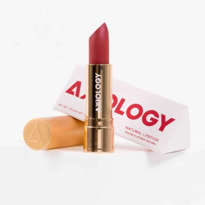

The bathroom is a space where we can make small changes that have a big impact towards more sustainable living.
Hover over the images below to learn more about alternatives to commonly used products.
Hair and Soap
Solid shampoo bars reduce plastic waste, save space and can last for 100 washes, like the shampoo bars by Lush
Instead of using a plastic loofah or sponge that will eventually be thrown away, switch to an organic, durable bamboo brush
Switching to a solid soap can brighten up a bathroom (if you choose a funky design, like this one from Lush) and greatly reduces plastic waste
Skincare and Beauty
Plenty of alternative and independent skincare brands exist that eliminate waste and alongside numerous other benefits. Goodjuju products are vegan, cruelty free and palm oil free

There is a wide range of sustainable beauty options, particularly with independent brands. '100% evil free' Axiology use biodegradable packaging, and are palm oil and cruelty free
How sustainable are our makeup brushes? Spectrum produce beautiful, affordable brushes made from durable bamboo and cruelty-free fibres
Health
The next time you buy a toothbrush, consider bamboo for a biodegradable alternative
If you get periods, unfortunately they can come with a lot of waste through traditional products. Alternatives include period cups (like Saalt) which can eliminate sanitary waste
Sunscreen is incredibly important to protect our skin, however regular ingredients can be very damaging to the environment. Eco-friendly, plastic-free options include Apothecary Muse's sunstick